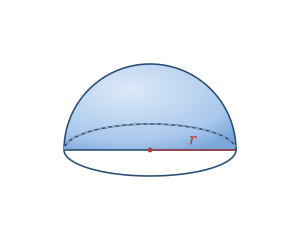

A hemisphere is what you get when you slice a sphere cleanly through its center: half of the round solid, capped by a flat circular face. It has one curved surface and one flat circular base, both sharing the same radius r.
Real-world hemispheres include domes on buildings, bowls, half an orange, and planetariums.
A hemisphere is a curved solid defined by its radius r.
| Surfaces | 1 curved surface + 1 flat circular base |
|---|---|
| Radius | r |
| Diameter | 2r |
Volume V = (2⁄3)πr³
Curved SA CSA = 2πr²
Total SA SA = 3πr² (curved + flat base)
Take a hemisphere with radius r = 3.
V = (2⁄3)πr³ = (2⁄3)π(27) = 18π ≈ 56.55
Curved SA = 2πr² = 2π(9) = 18π ≈ 56.55
Total SA = 3πr² = 3π(9) = 27π ≈ 84.82
The dome — a hemisphere in architecture — is remarkably strong because it spreads weight evenly outward along its curve, letting builders roof huge spaces without a single interior column.